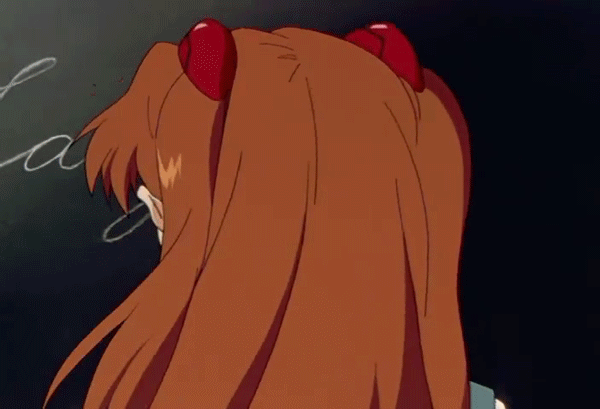
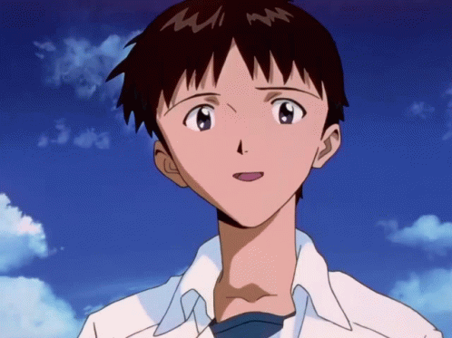

Аянамі вважається одним з найзагадковіших персонажів у серіалі — навіть її походження не зовсім ясне. Достовірні дані про її минуле та походження практично відсутні з огляду на те, що вся інформація по невідомих причинах була стерта до першої появи Рей.
А Ким була стерта ця інформація — теж невідомо, проте відомо, що командувач Nerv Ґендо Ікарі приховує дійсну природу Рей навіть від Seele, якому він підпорядкований. Технічно, вона є клоном Юі Ікарі, але вона має душу другого ангела Ліліт.
Відомо, що в штаб-квартирі Nerv — Ґеофронті, на фабриці ядер псевдопілотів, яких використовували для безпілотного ведення бою Євангеліонами, є запас її тіл, які, за словами вченого Ріцуко Акаґі, використовуються як для воскресіння Рей, так і як основа для ядер псевдопілотів.
Таким чином, ця система забезпечує душі Рей запасні вмістища, тобто штучну реінкарнацію.
Справа номер 2: Аска Ленґлі Сорю:

Аска — горда, агресивна, сильна і вельми високої думки про свої здібності та зовнішність. Відмітні особливості — довге рудувате волосся і запальний характер. Спершу вона зображена як комедійний персонаж.
Її важке минуле приховується і розкривається лише поступово, на відміну від її запального, ба навіть нарваного характеру. Вона часто вторгається в особистий простір інших людей, особливо Шінджі. В такий спосіб Аска привертає увагу людей, вона прагне аби її не ігнорували, як це колись робила її рідна мати.
Гостро потребує бути самодостатньою і не розраховує на допомогу інших. Однак насправді вона потребує визнання та уваги з боку інших. Саме цим пояснюється її перфекціонізм — Аска завжди старається бути першою та найкращою. Це почуття вже стало частиною її характеру.
Справа номер 3: Шінджі Ікарі

Шіндзі Ікарі - головний герой "Neon Genesis Evangelion" і призначений пілот "Євангеліону: Модуля-01", третє дитя. Має комплекс неповноцінності та тривожно-уникаючий тип особистості, що створюють певні проблеми у взаємодії та встановленням контактів з оточуючими. Більша частина історії зосереджена на особистих проблемах Шінджі, його проблемах із пілотуванням Єви та стосунками з іншими людьми.
Він син "загиблого" біоінженера Gehirn Юї Ікарі та командувача Nerv (а раніше шефа Gehirn) Гендо Ікарі. Після смерті матері Шінджі був покинутий батьком. Хлопчик одинадцять років прожив із "сенсеєм", поки його не направили в Токіо-3 для пілотування модуля-01 проти Ангелів. Тут він живе з Місато Кацурагі, а пізніше до них приєднується Аска Ленглі Сорью.